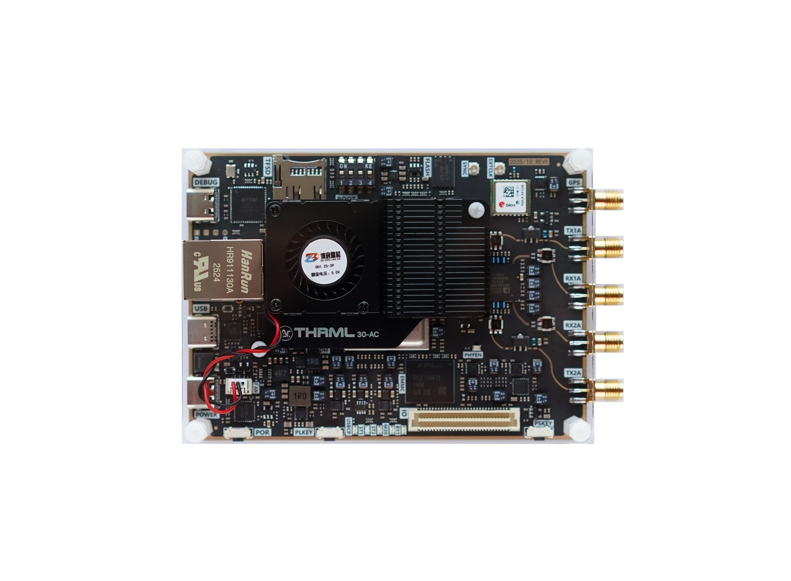
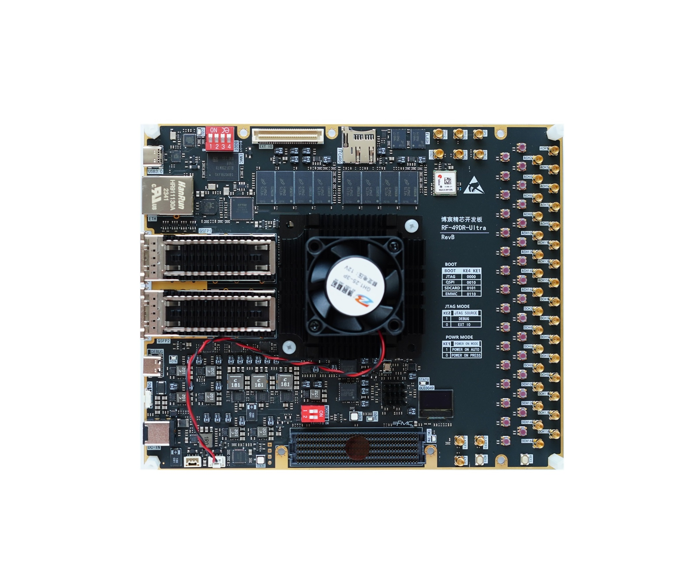

AI-Powered Engineering for SDR & SatCom
Orion is Mintaka AI's engineering platform in development for designing, simulating, verifying and implementing FPGA-based communication systems.
SDRLib
FPGA-BASED COMMUNICATION SYSTEM LIBRARY
SDRLib was Mintaka's first major in-house engineering project. Today, it is a core library we use across FPGA, SDR and SatCom engineering work to build communication systems from synthesizable, configurable DSP and communication IP.
Each functional block pairs a synthesizable RTL implementation with a Python golden model, fixed-point configuration, tests, documentation and synthesis results. Orion builds on this foundation to connect algorithm exploration, RTL verification, FPGA synthesis, system integration and measured hardware tests.

REPRESENTATIVE LABORATORY HARDWARE
From Algorithm to Hardware Test
Orion is designed to move a system through one repeatable workflow: algorithm exploration, Python simulation, RTL verification, FPGA synthesis, system integration and hardware-in-the-loop evaluation. This keeps the mathematical model and the deployed implementation connected.
The hardware layer is intended for configurable RF transmit and receive paths, enabling measured evaluation of signal-processing chains, channel scenarios and receiver algorithms.

AI ENGINEERING COPILOT
Copernicus: AI-Assisted Design Architect
Copernicus is Mintaka's hands-on engineering partner for FPGA, RTL, DSP, SDR, SoC FPGA, verification, timing, tool-flow and embedded co-design work. It helps turn a system goal into concrete specifications, architecture, module boundaries, clock and reset domains, and an implementation plan.
It supports synthesizable RTL, verification plans, assertions, reference models, regressions, constraints, timing analysis, resource trade-offs and bring-up preparation. Copernicus operates as an engineering layer alongside the team — not as a generic chatbot or a replacement for engineers.
What Orion Is Designed to Provide
Verified building blocks, transparent engineering evidence and a faster path from a communication-system concept to an FPGA prototype.
Verified DSP IP
Filters, CIC and half-band stages, NCO/DDS, FFT/IFFT, AGC, adaptive filters and equalizers.
Communication IP
Modulation, synchronization, FEC and complete transmit/receive chains for digital links.
Channel Models
AWGN, Doppler, fading, phase noise, multipath, IQ imbalance and sample-rate offset models.
Verification Evidence
Automated unit and randomized tests, RTL-to-reference comparison, regressions and system BER/EVM checks.
FPGA Characterization
Resource, timing, latency and throughput data across FPGA targets and implementation configurations.
SatCom Toolkit
Burst receivers, Doppler compensation, adaptive coding, multi-channel processing and link simulation.